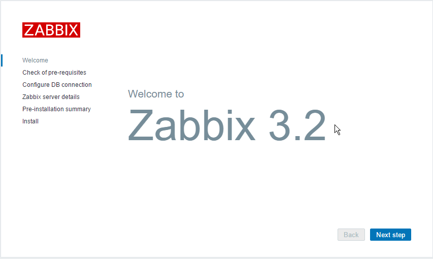
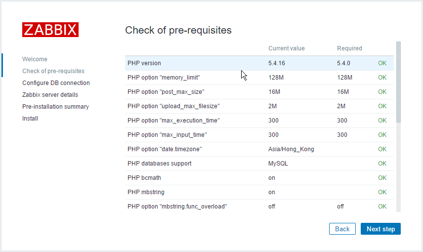
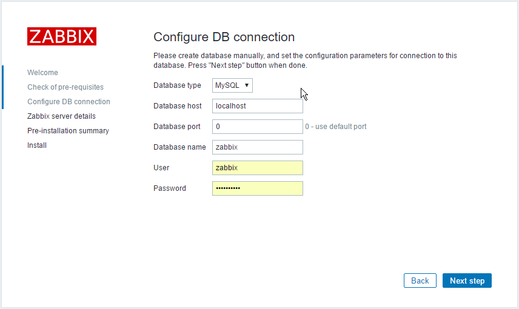
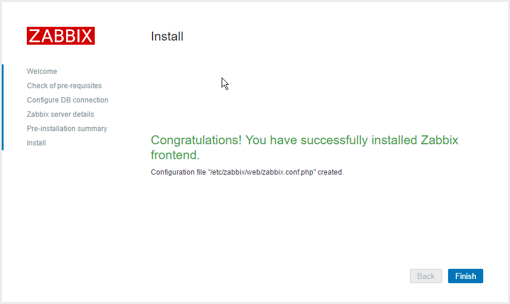

目录
- 18.1. Installing and Configuring Zabbix
- 18.2. web ui
- 18.3. zabbix-java-gateway - Zabbix java gateway
- 18.4. zabbix-agent
neo@monitor:~$ apt-cache search zabbix zabbix-agent - network monitoring solution - agent zabbix-frontend-php - network monitoring solution - PHP front-end zabbix-proxy-mysql - network monitoring solution - proxy (using MySQL) zabbix-proxy-pgsql - network monitoring solution - proxy (using PostgreSQL) zabbix-server-mysql - network monitoring solution - server (using MySQL) zabbix-server-pgsql - network monitoring solution - server (using PostgreSQL)
GRANT ALL PRIVILEGES ON zabbix.* TO 'zabbix'@'localhost' IDENTIFIED BY 'chen' WITH GRANT OPTION; FLUSH PRIVILEGES;
sudo apt-get install zabbix-server-mysql zabbix-frontend-php
如果上述过程中遇到一些问题，可以手工安装数据库
$ sudo mysql -uroot -p -e"create database zabbix;" $ sudo mysql -uroot -p -e"grant all privileges on zabbix.* to zabbix@localhost identified by 'enter-password-here';" $ mysql -uzabbix -p zabbix < /usr/share/zabbix-server/mysql.sql $ mysql -uzabbix -p zabbix < /usr/share/zabbix-server/data.sql $ sudo dpkg-reconfigure zabbix-server-mysql
cat >> /etc/services <<EOF zabbix-agent 10050/tcp #Zabbix Agent zabbix-agent 10050/udp #Zabbix Agent zabbix-trapper 10051/tcp #Zabbix Trapper zabbix-trapper 10051/udp #Zabbix Trapper EOF
yum localinstall -y http://repo.zabbix.com/zabbix/2.4/rhel/7/x86_64/zabbix-release-2.4-1.el7.noarch.rpm
yum install -y zabbix-server-mysql zabbix-web-mysql
cd /usr/share/doc/zabbix-server-mysql-2.4.0/create/
mysql -uzabbix -p zabbix < schema.sql
mysql -uzabbix -p zabbix < images.sql
mysql -uzabbix -p zabbix < data.sql
cp /etc/zabbix/zabbix_server.conf{,.original}
vim /etc/zabbix/zabbix_server.conf <<EOF > /dev/null 2>&1
:%s/# DBPassword=/DBPassword=your_password/
:wq
EOF
systemctl start zabbix-server
systemctl restart httpd
安装脚本
#!/bin/bash
##################################################
# Author: Neo <netkiller@msn.com>
# Website http://netkiller.github.io
##################################################
yum localinstall -y http://repo.zabbix.com/zabbix/3.2/rhel/7/x86_64/zabbix-release-3.2-1.el7.noarch.rpm
yum install -y zabbix-server-mysql zabbix-web-mysql
# CREATE DATABASE `zabbix` /*!40100 COLLATE 'utf8_general_ci' */
zcat /usr/share/doc/zabbix-server-mysql-3.2.1/create.sql.gz | mysql -uzabbix -p zabbix
cp /etc/zabbix/zabbix_server.conf{,.original}
vim /etc/zabbix/zabbix_server.conf <<EOF > /dev/null 2>&1
:%s/# DBPassword=/DBPassword=your_password/
:wq
EOF
systemctl enable httpd
systemctl enable zabbix-server
systemctl start zabbix-server
systemctl restart httpd
配置php.ini文件 date.timezone = Asia/Hong_Kong
|  |
下一步
|  |
检查PHP模块与配置，如果未提示错误信息点击下一步按钮
|  |
填写数据主机名，用户与密码，然后下一步
 |
Zabbix Server 直接点击下一步
 |
确认填写信息，如果不正确可以返回重新填写，确认安装点击下一步
|  |
完成安装
登陆Zabbix 默认用户名admin 密码 zabbix ，请务必登陆后修改密码